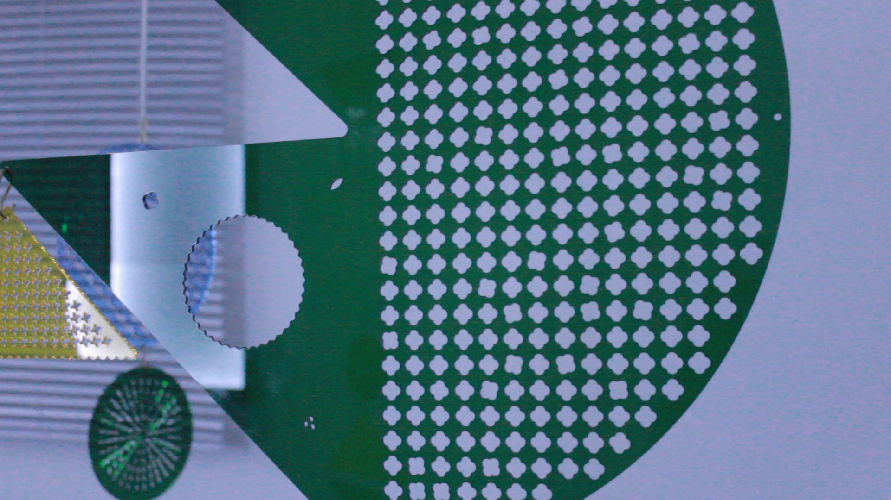

//-->
<html>
<head>
	<title>Tilt-in</title>
	<script src="https://ajax.googleapis.com/ajax/libs/jquery/1.7.2/jquery.min.js" type="text/javascript"></script>
	<script src="./js/javascript-video-scrubber.js" type="text/javascript"></script>
	<link type="text/css" rel="stylesheet" href="./css/styles.css" />
	<script type="text/javascript">
		<!--//

		totalFrames = 103; // the number of images in the sequence of JPEG files (this could be calculated server-side by scanning the frames folder)

		$(document).ready(function() {
			resizeAdjustments(); // adjust the size of video placeholder image to fit the screen and keep aspect ratio (zoom crop)
		});

		//-->
	</script>
</head>
<body onload="resizeAdjustments();" onresize="resizeAdjustments();" onorientationchange="resizeAdjustments();">
	
	<!-- overlay grid pattern (optional)  <div id="overlay"></div> -->

	
 
	
	<!-- placeholder image for video (required) -->
	
	
	<!-- preload the video frames (required) -->
	<script type="text/javascript">
		<!--//
		// image filenames in frames folder should be "image_000000.jpg" through "image_000098.jpg"
		for(i = 0; i < totalFrames; i++) { // loop for each image in sequence
			images[i] =  new Image(); // add image object to array
			images[i].src = "./3/frames/images_"+pad(i, 6)+".jpg"; // set the source of the image object
		}
		//-->
	</script>
		
		<div ID="header">
			<a href="./index.html"></a>
		</div>
		
		<div class="play">
	 		<a href="./play2.html" class="other">next</a>
		</div>
		
		<div id="dialog" class="window">
			Scroll up and down to control the video clips.
			Click the logo to return to the collection page.
			<div id="popupfoot">
	    		<a href="#" class="close agree">OK</a>
	    	</div>
    	</div>
	    	
    	<div id="mask"></div>


</div>

<script src="//ajax.googleapis.com/ajax/libs/jquery/1.11.1/jquery.js"></script> 

<script>
$(document).ready(function() {	

var id = '#dialog';
	
//Get the screen height and width
var maskHeight = $(document).height();
var maskWidth = $(window).width();
	
//Set heigth and width to mask to fill up the whole screen
$('#mask').css({'width':maskWidth,'height':maskHeight});

//transition effect
$('#mask').fadeIn(200);	
$('#mask').fadeTo("slow",0.9);	
	
//Get the window height and width
var winH = $(window).height();
var winW = $(window).width();
              
//Set the popup window to center
$(id).css('top',  winH/2-$(id).height()/2);
$(id).css('left', winW/2-$(id).width()/2);
	
//transition effect
$(id).fadeIn(2000); 	
	
//if close button is clicked
$('.window .close').click(function (e) {
//Cancel the link behavior
e.preventDefault();

$('#mask').hide();
$('.window').hide();
});

//if mask is clicked
$('#mask').click(function () {
$(this).hide();
$('.window').hide();
});
	
});
</script>

</body>
</html>